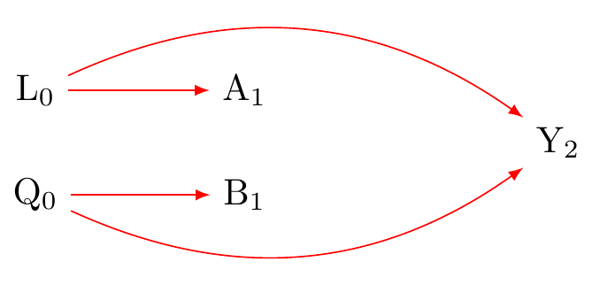
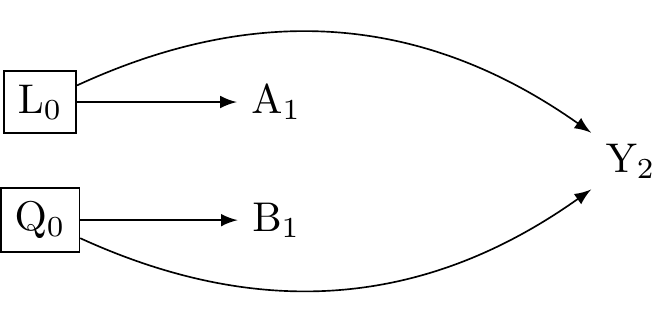

![]()

Note
Required - (Hernan and Robins 2024) Chapters 4-5 link
Optional - (Tyler J. VanderWeele and Robins 2007a) link - (Tyler J. VanderWeele 2009) link
Key concepts for the test(s):
- Effect Modification
- Interaction/Moderation
- Heterogeneous Treatment Effects
- Causal Mediation
Review
Concepts
Interaction as a joint intervention
This form of interaction occurs when the combined effect of two interventions (or treatments) is different from what would be expected based on their individual effects.
Consider two treatments, denoted as A and B, and their outcome as Y. A joint intervention causal interaction implies that the effect of A and B together on Y (denoted as Y(A,B)) is not merely the sum of their individual effects.
For instance, consider the effect of beliefs in Big Gods (exposure A) on social complexity (outcome Y), potentially influenced by a culture’s monumental architecture (exposure B). To assess the individual and combined effects of A and B, we look for evidence of causal interaction on the difference scale. Evidence for interaction would be present if the following inequality were to hold:
\bigg(\underbrace{\mathbb{E}[Y(1,1)]}_{\text{joint exposure}} - \underbrace{\mathbb{E}[Y(0,0)]}_{\text{neither exposed}}\bigg) - \bigg[ \bigg(\underbrace{\mathbb{E}[Y(1,0)]}_{\text{only A exposed}} - \underbrace{\mathbb{E}[Y(0,0)]}_{\text{neither exposed}}\bigg) + \bigg(\underbrace{\mathbb{E}[Y(0,1)]}_{\text{only B exposed}} - \underbrace{\mathbb{E}[Y(0,0)]}_{\text{neither exposed}} \bigg)\bigg] \neq 0
This equation simplifies to
\underbrace{\mathbb{E}[Y(1,1)]}_{\text{joint exposure}} - \underbrace{\mathbb{E}[Y(1,0)]}_{\text{only A exposed}} - \underbrace{\mathbb{E}[Y(0,1)]}_{\text{only B exposed}} + \underbrace{\mathbb{E}[Y(0,0)]}_{\text{neither exposed}} \neq 0
A positive value would indicate evidence for additive interaction. A negative value would indicate evidence for sub-additive interaction. A value near zero would imply no reliable evidence for interaction.
Figure 1 clarifies the need to evaluate two sources of counfounding, one for each intervention (A and B). The graph resembles others we have considered. By adjusting for L_{0} we obtain an unbiased estimate of the A\to Y path. By adjusting for W_{0} we obtain an unbiased estimate of the B\to Y path. As indicated in Figure 2, we must condition on both L_{0} and W_{0} to identify causal interaction conceived as a joint interaction.
An important complication is that evidence for causal interaction may differ depending on the measurement scale one chooses to assess it Tyler J. VanderWeele (2012). Evidence for the strength of a causal effect estimate for interaction in the presence of effect-modification will differ depending on whether the effect is measured on the ratio scale as opposed to the difference scale (see: Tyler J. VanderWeele and Knol (2014), who recommends using the causal difference scale for most policy settings.)

Again we arrange Figure 2 to follow the assumed sequence of causation. Doing so better clarifies demands for data quality – the timing of the events must be ensured. Data collection should also draw on expert knowledge about how A and B may be related over time; measurements of A and B should be taken within intervals in which A and B are unlikely to affect each other.
3.1.4 Interaction as effect-modification of a single intervention

It is often scientifically interesting to consider whether treatment effects vary over levels of other variable without imagining a double intervention. We call a variable over which the treatment effect varies, an ‘effect-modifier’ or an ‘effect-measure modifier.’ We call the phenomenon of variation in the effect of the exposure over levels of a covariate, ‘effect-modification,’ or ‘effect-measure modification’ or ’treatment effect heterogeneity. The counterfactual contrasts required to estimate effect-modification differ from those of a joint intervention. Suppose A is the treatment, G is the modifier, and Y is the outcome. effect-modification assesses whether the effect of A on Y is different across levels of G (i.e., whether the effect of A on Y is different when G = g1 compared to when G = g2).
Figure 3 consider whether effect-modification of A on Y across levels of G. Because we are not interested in the causal effect of G as such, but rather, how the effect of A varies across G, we would not need to adjust G by Z. However, as we shall consider in the next section, the presence and absence of effect-modification may depend on other variables in a causal network, as well as on which other variables investigators condition on in their models. To foreshadow, we suppose that Z, a parent of G, is an effect-modifier of A on Y. Were we to include Z in the model, the effect estimate for G on Y may be attenuated or erased. There is here no clear fact of the matter about whether and how much G is an effect-modifier outside of researcher modelling decisions. I remind readers: with absolute power comes absolute responsibility.
To better understand the interest of effect-modification, again consider a study investigating whether beliefs in big Gods affect social complexity. Suppose we compare two distinct geographical groups: North American societies (G=1) and Continental societies (G=2). Suppose we want to examine the causal effect of changing the exposure from A = 0 to A = 1 within each group and then compare these effects across the groups. The relevant causal contrasts are given as follows:
- Causal effect within North American societies (G=1): \hat{\tau}_{g1} = \hat{\mathbb{E}}[Y(1)|G=1] - \hat{\mathbb{E}}[Y(0)|G=1]
Here, \hat{\tau}_{g1} represents the estimated causal effect of changing the exposure from A = 0 to A = 1 within the North American societies.
Causal effect within Continental societies (G=2):
\hat{\tau}_{g2} = \hat{\mathbb{E}}[Y(1)|G=2] - \hat{\mathbb{E}}[Y(0)|G=2]
Similarly, \hat{\tau}_{g2} denotes the estimated causal effect for the Continental societies.
Comparing causal effects across groups:
\hat{\gamma} = \hat{\tau}_{g1} - \hat{\tau}_{g2}
The estimated quantity \hat{\gamma} computes the difference in the causal estimands between the two groups. A nonzero \hat{\gamma} indicates effect-modification, suggesting that the effect of changing the exposure differs between the two groups. If we were to observe that \hat{\gamma} \neq 0, this would provide evidence for variability in the effect of the exposure on the outcome in different groups. Note that the causal effect for one group might be indistinguishable from zero, and yet we might nevertheless find evidence for effect-modification if the comparison group exhibits reliably different responses from the contrast group that is indistinguishable from zero.
3.1.5 Evidence for effect-modification is relative to inclusion of other variables in the model
The ‘sharp-null hypothesis’ states there is no effect of the exposure on the outcome for any unit in the target population. Unless the ‘sharp-null hypothesis’ is false, there may be effect-modification. For any study worth conducting, we cannot evaluate whether the sharp-null hypothesis is false. If we could the experiment would be otiose. Therefore, we must assume the possibility of effect-modification. Notably, whether a variable is an effect-modifier also depends on which other variables are included in the model. That is, just as for the concept of a ‘confounder’, where a variable is an ‘effect-modifier’ cannot be stated without reference to an assumed causal order and an explicit statement about which other variables will be included in the model (Tyler J. VanderWeele 2012).
Figure 4 presents a scenario in which the marginal association between A and Y is unbiased. The exposure A is unconditionally associated with Y. Recall our convention \boxedblue{G} denotes effect-modification with conditioning and \circleblue{Z} indicates effect-modification without conditioning. This graph states that the conditional association of A on Y varies within levels of \boxedblue{G} (which is conditioned on), and furthermore that G is an effect-modifier by proxy (Tyler J. VanderWeele 2009). Here, \circleblue{Z} fully mediates the association of G and Y. That is \circleblue{Z} causes both G and Y, and G has no causal effect on Y.

Figure 5 presents the same a randomised experiment as in the previous causal diagram. We again assume that there is no confounding of the marginal association between the exposure, A, and the outcome, Y. However, suppose we were to adjust for Z and ask, does the conditional association of A on Y vary within levels of G, after adjusting for Z? That is, does G remain an effect-modifier of the exposure on the outcome? Tyler J. VanderWeele and Robins (2007b) proved that for effect-modification to occur, at least one other arrow besides the treatment must enter into the outcome. According to Figure 5, the only arrow into Y other than A arrives from Z. Because Y is independent of G conditional on Z we may infer that G is no longer an effect modifier for the effect of A on Y. Viewed another way, G no longer co-varies with Y conditional on Z and so cannot act as an effect-modifier.

Figure 6 presents the same a randomised experiment as in the previous graph. If we do not condition on B, then G will not modify the effect of A on Y because G will not be associated with Y. However, if we were to condition on B, then both B (an effect modifier by proxy) and G may become effect-modifiers for the causal effect of A on Y. In this setting, both B and G are conditional effect-modifiers.
Note that casual graphs help us to evaluate classifications of conditional and unconditional effect modifiers. They may also help to clarify conditions in which conditioning on unconditional effect-modifiers may remove conditional effect-modification. However we cannot not tell from a causal diagram whether the ancestors of an unconditional effect-modifier will be conditional effect-modifiers for the effect of the exposure on the outcome; see: Tyler J. VanderWeele and Robins (2007b), also Suzuki et al. (2013). Causal diagrams express non-parametric relations. I have adopted an off-label colouring convention to denote instances of effect-modification to highlight possible pathways for effect-modification, which may be relative to other variables in a model.

Figure 7 reveals the relativity of effect-modification. If investigators do not condition on B, then G cannot be a conditional effect-modifier because G would then be independent of Z because B is a collider. However, as we observed in Figure 6, conditioning on B, a collider, may open a path for effect-modification of G by Z. Both B and G are conditional effect modifiers.


Figure 8 considers the implications of conditioning on Z, which is the only unconditional effect-modifier on the graph. If Z is measured, conditioning on Z will remove effect-modification for B and G because B,G\coprod Y |Z. This examples again reveals the context dependency of effect-modification. Here, causal diagrams are useful for clarifying features of dependent and independent effect modification. For further discussion, see: Suzuki et al. (2013); Tyler J. VanderWeele (2009).
OLD MATERIAL
What is interaction?
What is it to compare causal effects in groups?
\hat{\gamma} = \overbrace{\big( \hat{E}[Y(a)|G=g] - \hat{E}[Y(a^{\prime})|G=g] \big)}^{\hat{\delta_g}} - \overbrace{\big(\hat{E}[Y(a^{\prime})|G=g^{\prime}]- \hat{E}[Y(a)|G=g^{\prime}]\big)}^{\hat{\delta_{g^{\prime}}}}
References
Hernan, M. A., and J. M. Robins. 2024. Causal Inference: What If? Chapman & Hall/CRC Monographs on Statistics & Applied Probab. Taylor & Francis. https://www.hsph.harvard.edu/miguel-hernan/causal-inference-book/.
Suzuki, Etsuji, Toshiharu Mitsuhashi, Toshihide Tsuda, and Eiji Yamamoto. 2013. “A Counterfactual Approach to Bias and Effect Modification in Terms of Response Types.” BMC Medical Research Methodology 13 (1): 1–17.
VanderWeele, Tyler J. 2009. “On the Distinction Between Interaction and Effect Modification.” Epidemiology, 863–71.
VanderWeele, Tyler J. 2012. “Confounding and Effect Modification: Distribution and Measure.” Epidemiologic Methods 1 (1): 55–82. https://doi.org/10.1515/2161-962X.1004.
VanderWeele, Tyler J, and Mirjam J Knol. 2014. “A Tutorial on Interaction.” Epidemiologic Methods 3 (1): 3372.
VanderWeele, Tyler J., and James M. Robins. 2007b. “Four types of effect modification: a classification based on directed acyclic graphs.” Epidemiology (Cambridge, Mass.) 18 (5): 561–68. https://doi.org/10.1097/EDE.0b013e318127181b.
———. 2007a. “Four types of effect modification: a classification based on directed acyclic graphs.” Epidemiology (Cambridge, Mass.) 18 (5): 561–68. https://doi.org/10.1097/EDE.0b013e318127181b.